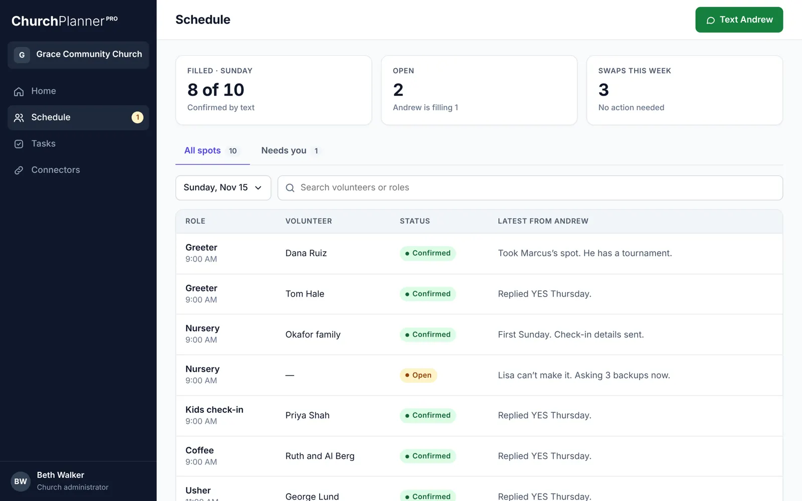

Prototype · Texts go to Church Assistant at (651) 505-5520. See the staff view
Church Assistant is AI for your volunteer schedule. Connect your schedule once, and every week it confirms each volunteer, covers swaps from your backups and sends reminders. Your volunteers just reply.
By texting Church Assistant you agree to the Terms and Privacy Policy and to receive texts from ChurchPlannerPro. Msg & data rates may apply. Reply STOP to opt out. Church Assistant is AI and can make mistakes.
Church Assistant works with the tools you already use: Planning Center, SignUpGenius, Google Workspace, Microsoft 365, Pushpay, IconCMO, Stripe, QuickBooks, YouTube, WordPress and your bank.
Add (651) 505-5520 to your staff group chat like any contact. It texts your volunteers from there.
Confirmations, swaps and reminders, handled by text. You hear from it only when a spot truly needs you.
Every text you’d otherwise send on a Thursday night, or at 7 AM on Sunday.
Every volunteer gets one text on Thursday and replies in their own words. Church Assistant figures out the rest.
If someone can’t make it, Church Assistant asks your backups in order until someone says yes, then tells both people.
Time, role and where to check in, the evening before.
New family on nursery, someone stepping back. Text Church Assistant and it’s updated the same day.
One text: who’s serving and whether anything is still open.
Ask “Who’s on nursery Sunday?” in your staff chat and get an answer.
For your volunteers
The people who serve on Sunday already know how to text. That’s all this asks of them.
“Yes,” “can’t make it this week,” or “can Dana take my spot?” Church Assistant understands. Nobody has to learn a system or remember a password.
iPhone, Android or a flip phone, including for the ushers who have never opened an app.
Never marketing. Anyone can tell Church Assistant to stop texting them, and you’ll know so you can follow up yourself.
For you
Log in to see who’s serving, who confirmed and what Church Assistant is working on. Most weeks you won’t need to.
See the schedule
Not per volunteer and not per text. One price for your church.
Texting Church Assistant doesn’t start billing. Invite only for now.
Text Church Assistant your volunteer list, in whatever shape it’s in. This week’s confirmations go out by Thursday.
Text Church AssistantNo. They get texts and reply, on any phone, including a flip phone.
Yes. The first time Church Assistant texts a volunteer, it introduces itself as AI working for your church.
Confirmations and reminders go out on a schedule you set up together. Anything unusual, like a sick volunteer at 7 AM, comes to you.
It’s used only to schedule your church’s volunteers, never sold and never used for marketing. How we keep it safe
Remove Church Assistant from the thread, or just tell it to stop texting you. Volunteers can do the same anytime.